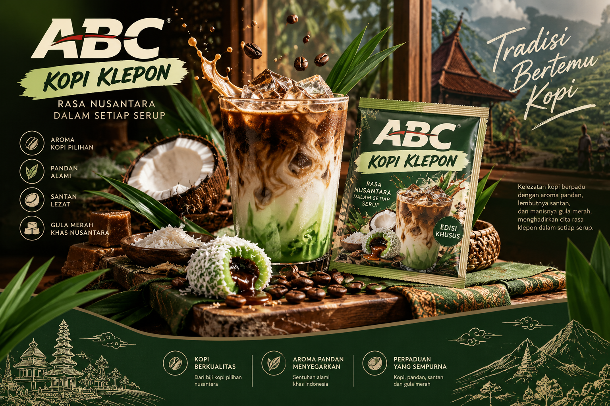

🌿01
THE GREEN NOTEPandan
Aroma hijau yang mengingatkan pada jajanan tradisional.
Kenangan rasa klepon dalam pengalaman kopi yang terinspirasi dari kekayaan rasa Nusantara.

Terinspirasi dari klepon—jajanan tradisional dengan aroma pandan, kelapa, dan manisnya gula merah—kami membayangkan perpaduan cita rasa lokal dalam secangkir kopi.
Sebuah konsep yang membawa kehangatan tradisi ke dalam gaya hidup modern.
KENALI RASA KAMI ↗Terinspirasi dari bahan-bahan yang membuat klepon begitu akrab di ingatan.
Aroma hijau yang mengingatkan pada jajanan tradisional.
Sentuhan lembut yang identik dengan klepon.
Inspirasi rasa manis hangat yang khas Nusantara.
Visual dan rasa merupakan konsep kreatif, bukan klaim komposisi resmi produk.
Kopi dengan inspirasi rasa jajanan Nusantara. Sebuah konsep untuk kamu yang ingin menikmati sentuhan tradisi dengan cara yang berbeda.
Setiap cangkir punya cerita. Jadikan waktu minum kopi sebagai momen kecil untuk berhenti sejenak dan menikmati hari.
BACK TO THE BEGINNING ↑“Ada rasa yang membawa kita pulang, bahkan sebelum tegukan pertama.A LITTLE TASTE OF HOME
INDONESIAN ROOTS. MODERN MOMENTS.